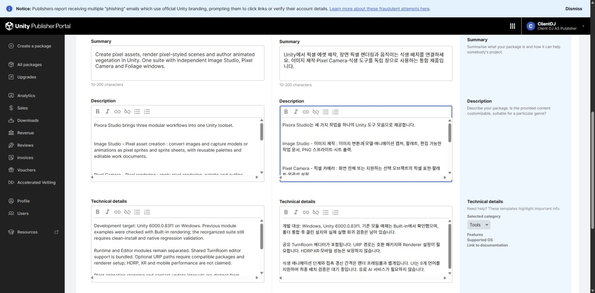
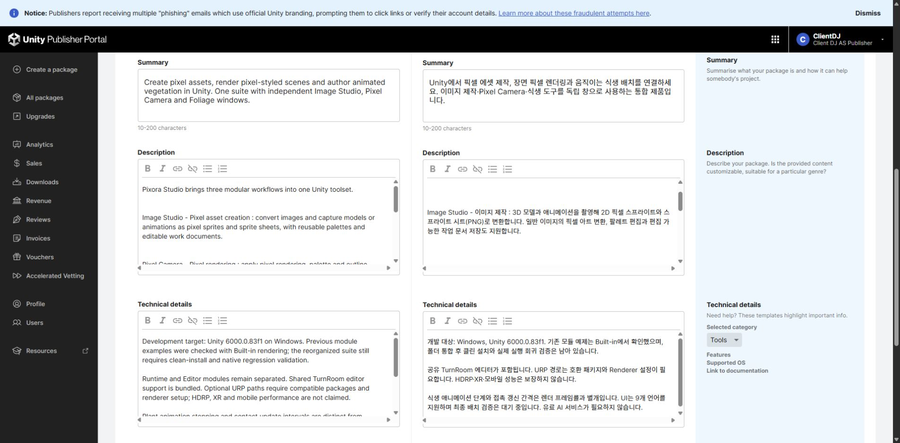

Tracefolio REPORTS & ISSUES
Tracefolio REPORTS & ISSUESImage Studio 설명에 3D 모델·애니메이션의 2D 픽셀 변환 명시
완료영문·한국어·일본어·중국어 판매 설명에 3D 모델과 애니메이션을 2D 픽셀 스프라이트·PNG 시트로 변환하는 기능을 명시하고 저장값을 대조했습니다.
작업 결과
판매 초안의 Image Studio 설명을 수정하고4언어 저장값을 재열기 대조했습니다. 최종 제출은 하지 않았습니다.
Image Studio - 이미지 제작 : 3D 모델과 애니메이션을 촬영해 2D 픽셀 스프라이트와 스프라이트 시트(PNG)로 변환합니다. 일반 이미지의 픽셀 아트 변환, 팔레트 편집과 편집 가능한 작업 문서 저장도 지원합니다.
변경 내용
적용 내용
기존의 모호한 “모델·애니메이션 캡처” 대신 입력이3D 모델·애니메이션이고 결과가2D 픽셀 스프라이트·스프라이트 시트(PNG)임을 첫 문장에서 설명합니다. 일반 이미지 변환·팔레트·작업 문서 기능도 유지했습니다. 다른 모듈 설명은 유지했습니다.


검증
판매 초안을 저장하고 전체 새로고침 후 영문 설명 및 각 번역 페이지를 다시 열어 새 문구를 대조했습니다.4언어 모두 일치합니다. 실제 수정 위치가 보이는 전후 캡처를 확인했습니다. 저장값 대조. 기존 기능의 판매 문구 수정이며 새 기능 구현·실행 검증을 주장하지 않습니다.
교훈 검토: 판매 설명은 입력(3D 모델·애니메이션)과 출력(2D 픽셀 스프라이트·시트)을 명확히 구분합니다. 프로젝트 문서에 반영하며 기존 전역의 간결·정확한 판매 문구 원칙과 중복되어 전역 변경은 없습니다.
남은 사항
이번 문구 수정의 저장 검증은 완료했습니다. 통합 제품의 네이티브 QA·미디어·최종 제출 등 기존 미완료 항목은 이번 문구 수정과 별개로 유지합니다.
작업 시간
- 제안 시간: 판매 초안 수정·저장값 대조3~5분
- 실제로 완료된 시간: 2026-11-04 03:25:50 KST 시작; 2026-11-03T18:28:40.751Z 문구 수정·저장값 대조 완료. 보고서 공개는 별도 배포 확인.
- XERJ: 미사용 — 코드 검색 불필요 — 기존 기능의 판매 설명 문구만 수정하고 포털 저장값을 검증